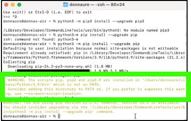

Install MkDocs and plugins
MkDocs is used to build nicely formatted output based upon the GitHub markdown content you will be creating. As an example, the IBM Cloud Satellite L3 is specified in this GitHub repository and the MKDOCS build output can be found here.
MkDocs is well documented here: https://www.mkdocs.org/. You can also do google searches on MkDocs for lots of other useful content and primers.
Before installing MkDocs, we need a few other tools.
Python
Python is a powerful scripting language. It is used by MkDocs.
Mac
For Mac users, python may already be installed on your machine. Open a terminal and type python. If it is not found, instructions can be found in the MkDocs Installation guide which includes a link on how to install Python.
Windows
For MS Windows users, open a command prompt and type in python. This should open the MS App store and you can install python from there.
Windows users
If you are using Windows, some of the commands below may not work. Try using python -m like this:
For a more permanent solution, you may need to edit your PATH environment variable to include the Scripts directory of your Python installation. Recent versions of Python include a script to do this for you. Navigate to your Python installation directory (for example C:\Python38), open the Tools, then Scripts folder, and run the win_add2path.py file by double clicking on it. Alternatively, you can download the script and run it (python win_add2path.py).Pip
Pip is a python utility for installing python packages.
Open a Command prompt (Windows) or terminal (MaCOS) to run the following...
To install, follow these steps:
-
Install pip:
orIf you receive a message about a newer version being available, follow the directions to upgrade pip.
-
If during the last step you received a PATH warning, you need to update your default PATH environment variable.

MacOS
Use a text editor to open the .zprofile file in your home directory and add the PATH your copied to the PATH environment variable in the file. The video below shows how this is done. Note, the contents of your .zprofile may look a little different. Don't change anything other than the PATH variable and make sure you add a trailing colon (:).
Windows
To update the PATH environment variable follow these steps:
a. Right-click on the Start Button. b. Select “System” from the context menu. c. Click “Advanced system settings” d. Go to the “Advanced” tab. e. Click “Environment Variables…” f. Click variable called “Path” and click “Edit…” g. Click “New” h. Enter or paste the path that appeared in the warning message. It should be similar to "/Users/andrewj/Library/Python/3.9/bin". -
If you had to perform the last step, close your terminal or command prompt and open a new one in order for the updated PATH to be used.
-
Install MKDOCS
or
-
Install MKDOCS material theme
Material is the name of the theme we are using in MkDocs. You can learn more about it here.
or
-
Install MKDOCS macros plugin
The macros plugin for MkDocs provides lots of useful tools that we use in our builds. You can learn more about it here.
or
-
Install MkDocs video plugin
The MkDocs video plugin is used to embed videos in our documents. You can learn more about it here.
or
-
Install pymdown extensions:
or
-
Install print-site plugin:
or
-
Install glightbox plugin:
or
-
For creating PDF files, install the mkdocs-print-site-plugin. Follow the directions here: https://timvink.github.io/mkdocs-print-site-plugin/how-to/export-PDF.html.
or
``` pip3 inst
Note, there are many more MkDocs themes and plugins that you may find useful in your content development. However, to be consistent with other IBM Cloud L3s, I suggest sticking with the Material plugin that you just installed.